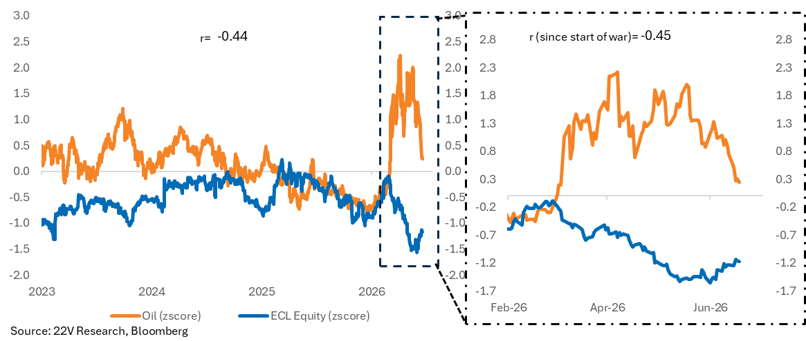
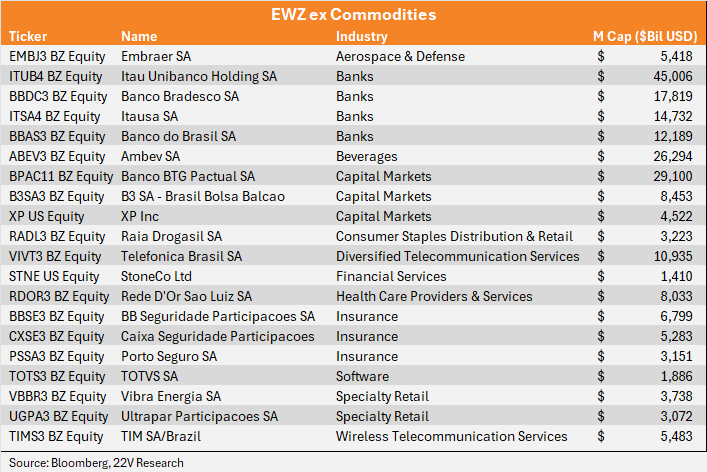
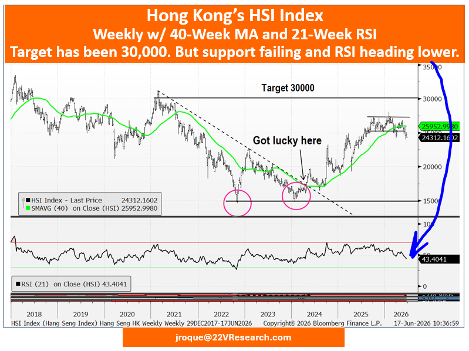
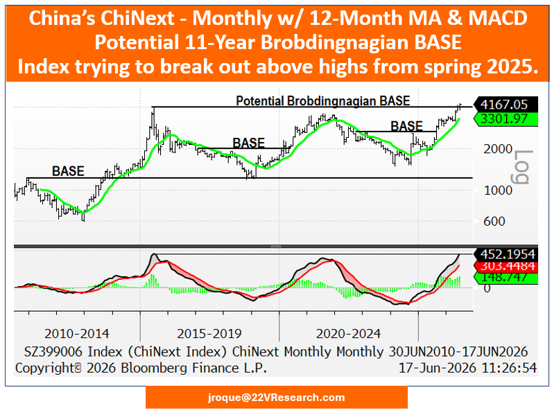

A60-Second Verdict
This email is worth a selective read because Ecolab is a concrete watchlist candidate, while Brazil and Hang Seng require more work.
- ECL is the cleanest idea: lower oil can reduce input-cost pressure while AI data-center liquid cooling may create structural demand.
- Brazil is interesting but not ready: the clean idea is domestic Brazil excluding commodities, which means the implementation vehicle matters.
- Hang Seng is a risk signal: the short idea needs live price, technical, and portfolio checks before it can become a recommendation.
Processor Decision
BSignal Scorecard
Maturity Sliders
CBasic Information
| Field | Value |
|---|---|
| Title | Idio Ideas Associated with Lower Commodity Prices |
| Author / sender | Dennis DeBusschere, 22V Research |
| Received | 2026-06-18 20:14:59 Europe/Zurich |
| Message ID | <vbqdQS8eSCuXp9mpY6NU5g@geopod-ismtpd-12> |
| Processed content | Email body plus embedded chart/table attachments. |
| Not processed | Canonical website/PDF version and linked Ecolab source note. |
DContent Extraction
| Signal | Plain-English Explanation | Initial Route |
|---|---|---|
| Ecolab | Ecolab may benefit twice: oil-linked input costs may ease, and AI data centers may need more liquid cooling. | Watchlist candidate |
| Brazil ex commodities | Domestic Brazil exposure may be attractive, but the broad Brazil ETF includes unwanted commodity exposure. | Implementation work |
| Short Hang Seng | Lower oil may not fix weak Chinese consumption, and Hong Kong technicals look weak in the source. | Market check needed |
EContent Evaluation
| Dimension | Assessment | RAG |
|---|---|---|
| Plausibility | The ECL mechanism is coherent: easing input pressure plus AI cooling demand. | Green |
| Evidence strength | Good email evidence and charts, but missing canonical linked note. | Amber |
| Decision readiness | Ready for watchlist and research agenda; not ready for trade execution. | Amber |
FInvestment Impact
| Area | Impact | Confirmation Score | Implication |
|---|---|---|---|
| ECL watchlist idea | Supports ECL as a differentiated AI-cooling plus margin-relief idea. | 8/10 | Promote to research watchlist; no buy action yet. |
| Brazil domestic exposure | Creates a possible macro-equity idea. | 6/10 | Build an implementation map before any action. |
| China/Hong Kong risk | Raises caution on Hang Seng exposure. | 6/10 | Use as risk flag; live market check required. |
GConcrete Actions
Use source tag 22V / lower oil / AI cooling.
The thesis may be attractive, but the vehicle is unresolved.
The source is not sufficient for a short recommendation.
HDetailed Appendix For Understanding
This appendix is intentionally detailed. The paragraph headings summarize the paragraph, so Rene can scan the section quickly and still get the substance without reading the original email end to end.
Chart Pack




Lower oil is not automatically bullish; the useful question is which company benefits specifically.
The 22V note looks for specific situations where lower oil changes the investment case. This matters because generic macro conclusions often create weak trades. A better signal is when one company or sector has a clear mechanism: lower costs, better margins, better demand, or a stronger relative position.
Ecolab is interesting because the source combines a cost benefit with a structural AI demand driver.
Ecolab can be understood as a company with exposure to water, hygiene, and industrial services. The 22V note frames ECL as a liquid-cooling beneficiary for AI data centers. At the same time, lower oil may reduce input-cost pressure. The practical analogy is that one headwind may fade while a separate growth market opens.
The Brazil idea is not "buy Brazil"; it is "isolate domestic Brazil and avoid commodity noise."
The source argues that domestic Brazil equities may have upside because of valuation, rates, employment, inflation, and possible political catalysts. But the broad Brazil ETF includes large commodity exposure, including Petrobras. That can dilute the intended domestic Brazil thesis.
The Hang Seng idea is a warning signal, not a ready short recommendation.
22V argues that lower oil will not necessarily revive Chinese consumption because consumer confidence and labor-market pressure remain weak. Shorting an index is a higher-risk action and needs current price levels, instrument choice, stop logic, and portfolio context.
ISource Handling
Recorded from Apple Mail mailbox Research Signals - New. The email was moved to Research Signals - Processed after signal capture. Obsidian note created at DragonShield Research Obsidian/01 Signals/2026/2026-06/2026-06-18 22V - Lower Oil Ideas.md. No live market-price validation was performed.